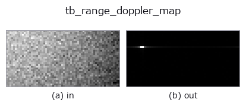

typed op• 数据种类:beatcube → image
• 调用:fullseye.apply(img, "tb_range_doppler_map", a=0.5, b=0.5)(2-D 的模型是一张图 + 两个标量旋钮 a,b∈[0,1])

*图为在 128×128 合成输入上实际运行的输出。左为输入，右为输出。点云以俯视散点显示(亮度 = z)，一维序列为折线，体数据为沿 z 的最大值投影，视频为中间帧，复数图像为幅值；无法成像的返回值直接显示数值。*
*旋钮 a 不改变输出(实测: 0.1 / 0.5 / 0.9 相同)。*
*旋钮 b 不改变输出(实测: 0.1 / 0.5 / 0.9 相同)。*
阶段(前置算子 → 本算子，从左到右):
▸ tb_range_doppler_map: 处理阶段 (文档网站)
换别的图像(合成场景 / 照片 / 硬币。上排为输入，下排为对应输出。旋钮取默认):
▸ tb_range_doppler_map: 其他输入图像 (文档网站)
拍频立方体的二维 FFT -> (n_doppler, n_range) 幅度图。
> 以下的详细说明为原文 —— 摘要与标题已翻译。
Fast time transforms to range (last axis, not shifted: bin j is j * c*f_s/(2*S*N_s) metres, and a physical range is always positive so the whole [0, f_s) band is used). Slow time transforms to velocity (middle axis, fftshifted so the map is centred on zero velocity: bin i is (i - N_c//2) * lambda/(2*N_c*T_c) metres per second, positive = receding).
The antenna axis is collapsed by *combine*: "incoherent" (default) is the mean of the magnitudes, which is angle independent and therefore the right default for detection; "coherent" is the magnitude of the mean, i.e. a beam pointed at boresight, which attenuates an off-boresight target on purpose. antenna=k uses element k alone. For a single-element cube all three agree exactly.
normalize=True divides by N_c * N_s, so a bin-centred target of amplitude a peaks at exactly a (measured: 1.0 for a unit target, absolute error 0.0). The default False keeps the raw FFT magnitude.
No window is applied — compose fmcw_window_apply first if you want one. The output is a plain 2-D float64 array, so every 2-D operator in Fullseye (threshold, morphology, labelling, blob measurement — the pieces a CFAR detector is made of) applies to it directly.
Raises ValueError: a real-valued cube (it would put a mirror ghost of every target at a fabricated range), fewer than 2 chirps or 2 samples, an out-of-range *antenna* index, an unknown *combine*, a cube over the element cap, an FFT that overflows to NaN, or NaN/Inf on the way in.
Typed bridge of the rangedoppler op range_doppler_map into the 2-D evolution registry: the same implementation, called under the op(v, a, b) convention. This op has no tunable parameter; a and b are unused.
• 示例数据目录(下载 URL / 许可证) —— 2-D 用 skimage.data(BSD/公有领域)加合成图,3-D 给出真实数据源(Stanford/PDS 等)的下载 URL。
• 算子来历与参考文献 —— 该算子族所依据的研究/方法出处。
下面的程序已确认可以运行(与图相同的输入)。在 Studio 帮助中，此块会变成按钮，可当场加载并运行。
img_to_beatcube 0.50 0.50 tb_range_doppler_map 0.50 0.50
下面的示例调用的是底层账本算子 range_doppler_map。此桥接算子只是把同一实现适配为 fn(v, a, b) 约定，行为完全相同(只是调用形式不同)。
• fmcw_range_doppler — py -3.11 examples/fmcw_range_doppler.py
image 作为输入)identity · gaussian · mean_box · bilateral · unsharp · median · min_filter · max_filter
typed)tb_points_to_voxel · tb_estimate_point_normals · tb_iss_keypoints · tb_project_points · tb_render_point_depth · tb_statistical_outlier_removal · tb_radius_outlier_removal · tb_voxel_grid_downsample
*Provenance: ops.py — 2D 算子登记表。本条目由 tools/opdocs.py md 自动生成(请勿手工编辑)。*
© 2026 Kazufumi Furuse — Fullseye operator documentation. Licensed under Apache-2.0.